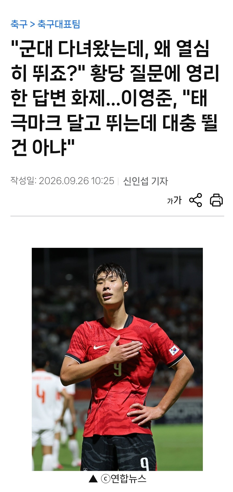
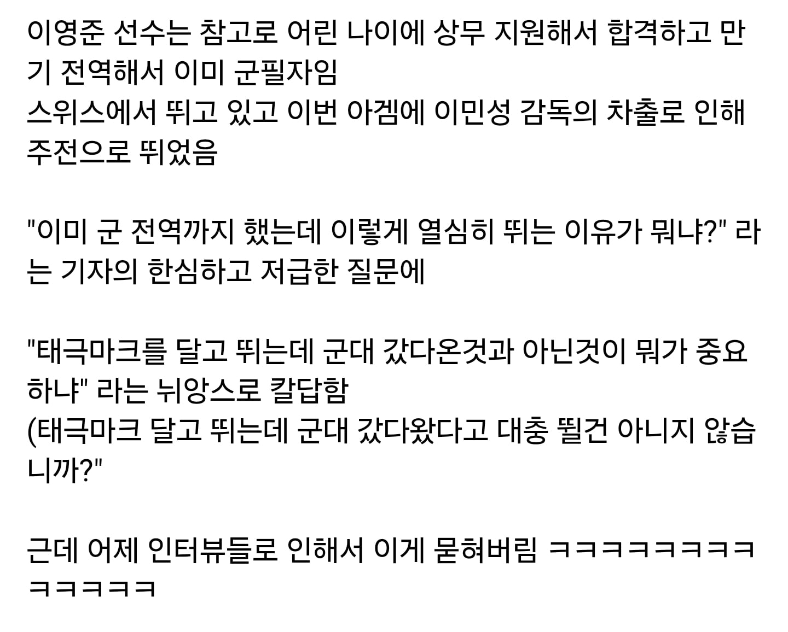
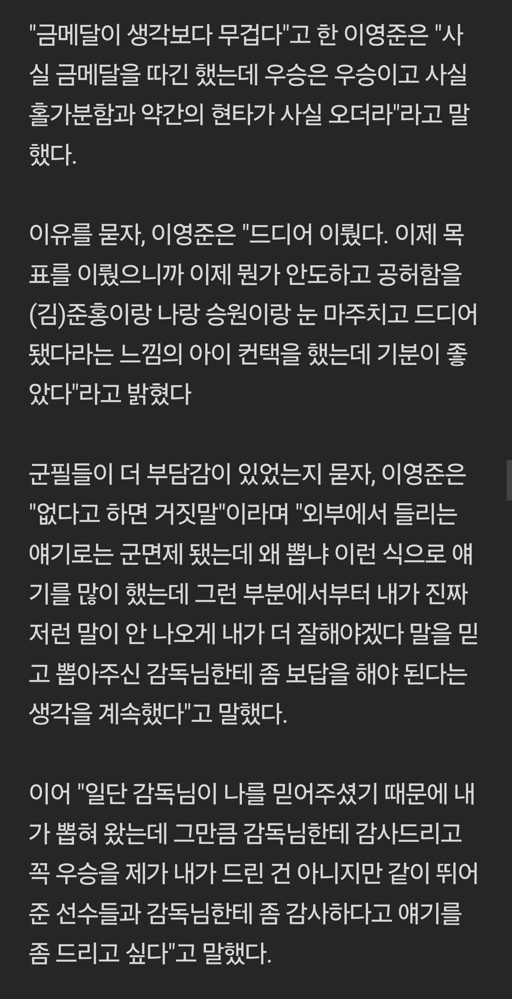

군대도 다녀온 군필자에
그렇다고 경기를 대충뛴것도아니고
더 잘하려고 노력하고
기자의 무례한 질문에
정석적이면서도 이상적인 답변으로 호감만 올라가고
시작과 끝이 완벽한 선수로 남을뻔 하다가
몇몇 선수들의 인터뷰로 여론만 안좋아지고
이영준선수의 대처는 묻혀버림



군대도 다녀온 군필자에
그렇다고 경기를 대충뛴것도아니고
더 잘하려고 노력하고
기자의 무례한 질문에
정석적이면서도 이상적인 답변으로 호감만 올라가고
시작과 끝이 완벽한 선수로 남을뻔 하다가
몇몇 선수들의 인터뷰로 여론만 안좋아지고
이영준선수의 대처는 묻혀버림
와...그시절 35개월...
차범근은 공군 만기전역했는데 군대에서 약속을 지키지 않아 분데스리가 진출이 늦어짐. 뿐만 어니라 '왜 조국을 배신하고 해외를 나가느냐'는 지금 생각해 보면 말도 안되는 여론, 대접 안해줬다고 '우리가 키워줬는데 감히' 라고 음해에 열을 올렸던 기레기들에 시달리면서 해외진출을 했었음.
오히려 나중에 이 인터뷰가 빛을 발할듯, 난 오히려 기자가 이 선수에겐 은인급이라고 생각함 ㅋㅋ
"그래.. 그거면 된거야"
다크나이트? ㅋㅋㅋㅋ
기레기 저걸 질문이라고 하고자빠졌네
독박병역 국제노동기구에서 강제징용으로 지정하는 공익근무요원제도 모두 남성에게만 부과되는 나라에서 아직도
이딴걸로 같은남자 머리채잡네 ㅋㅋ에휴 한남물소새기들
질문 꼬라지 봐라 기레기 새끼
진짜 기레기새끼 ㅋㅋㅋ
기크나이트 아님?
군필에 열심히 뛴 선수에게 저렇게 물어보는건 저런 답변 유도 한거 아님?
그럼 저 질문에 선수가 아 열심히 안뛸걸 그랬네요 이렇게 대답할리가 없고 당연히 모범답안 나오고 선수 이미지 오르고
기자는 쓸거리 하나 챙기고
질문이 뭔 커뮤똥글수준만도 못하냐
우문현답 그자체
솔직히 BTS까지 갈것도 없이 차범근 선생님도
분데스리가 진출 포기하면서까지 35개월 다녀오셨는데 걍 가십쇼